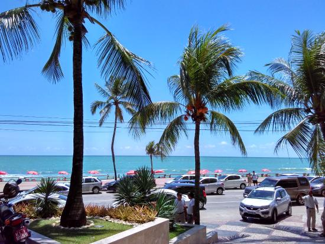
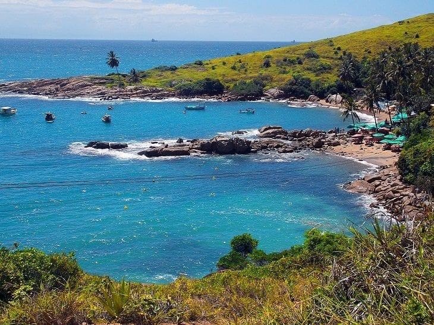
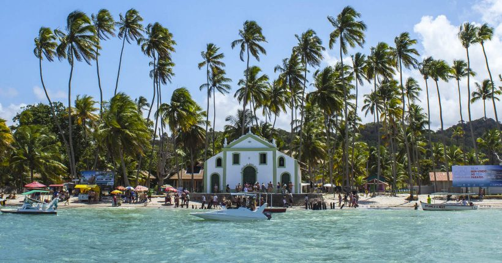
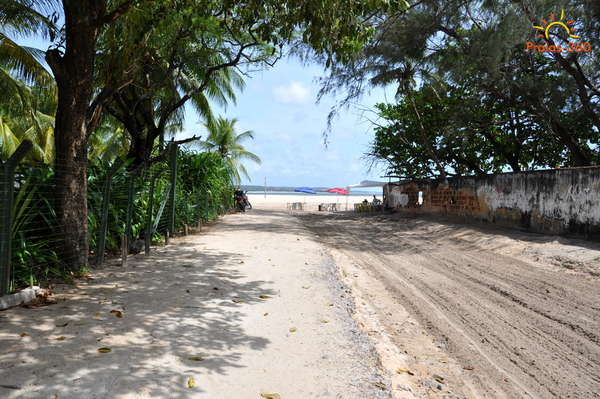
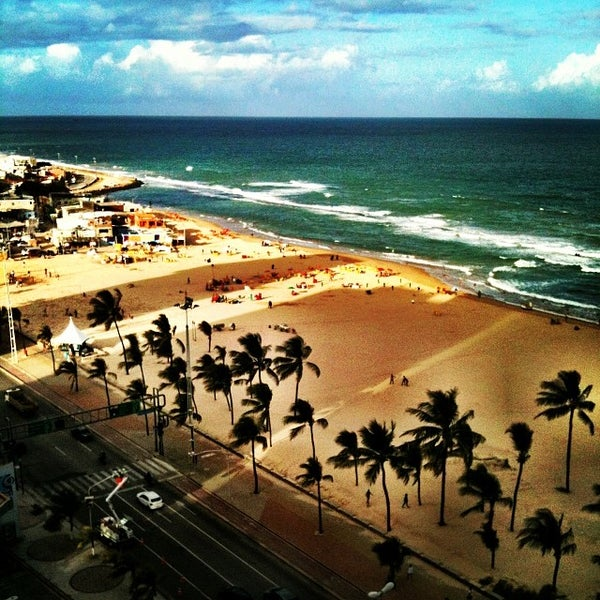
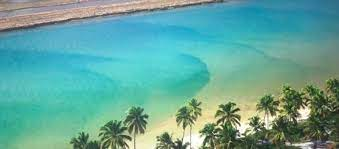
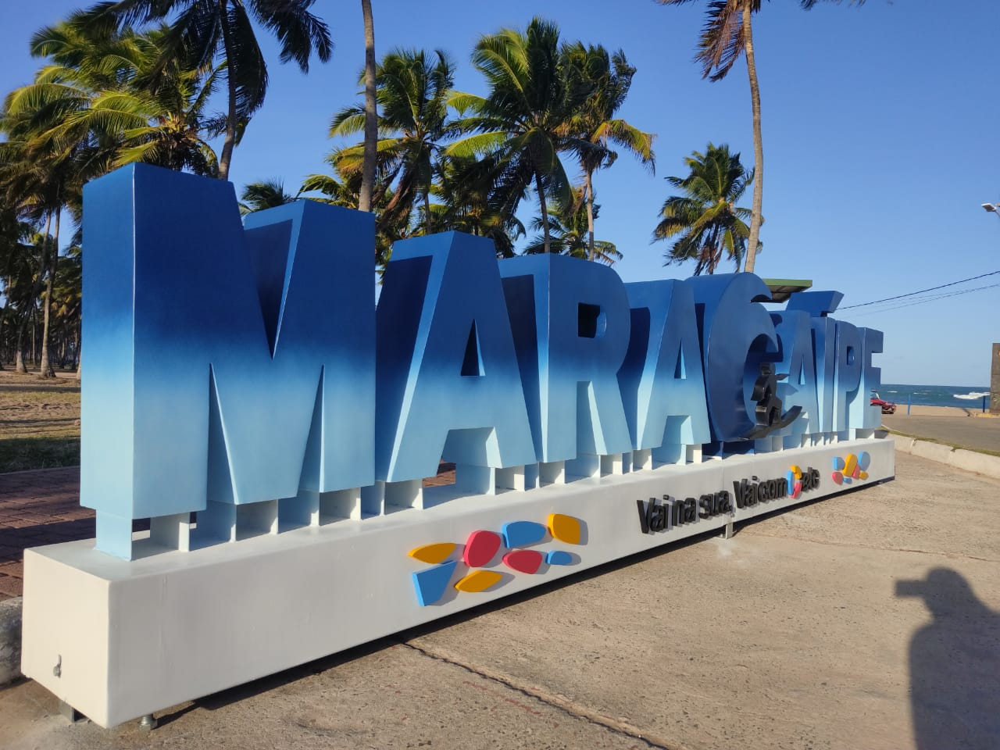

As Mais Belas Praias de Recife s2
Top 8 Praias Paradisíacas do Nordeste!!!
Aproveite o caribe brasileiro seja em uma viagem romântica, com os amigos, famíliares ou sozinho.
Praia de Boa Viagem
A Praia de Boa Viagem é a praia urbana mais famosa da cidade do Recife!

Praia de Calhetas
Praia belíssima e pequena com água azul-turquesa e cercada por muita natureza.

Porto de Galinhas
A região possui piscinas de águas claras e mornas formadas entre corais, além de estuários, mangues, areia branca e coqueirais!

Praia dos Carneiros
Caracterizada por altos coqueiros, areias claras e finas e águas calmas e quentes praticamente durante todo o ano, tem sua paisagem moldada pelo estuário (foz) do rio Formoso e por uma grande barreira de recifes que forma piscinas naturais na maré baixa.

Praia de Maria Farinha
Maria Farinha tem além de uma bela vegetação rasteira, o balneário possui altos coqueiros, mar aberto e o discreto limite natural do Rio Timbó, ideal para passeios náuticos.

Praias de Pina
É um dos lugares mais frequentados por turistas durante a alta temporada, que aproveitam para relaxar, tomar um refrescante banho de mar e praticar algum esporte. Com diversos prédios de alto padrão em sua orla, no restante do ano é frequentada por moradores da região e pescadores.

Praia de Muro Alto
Praia com um recife, palmeiras e águas calmas para banho, canoagem e prática de jet-ski.

Praia de Maracaipe
A praia é bem bonita mas o mar é um pouco bravo. Parece que não é muito propício para o banho. Mas a paisagem é linda com seus coqueiros.
